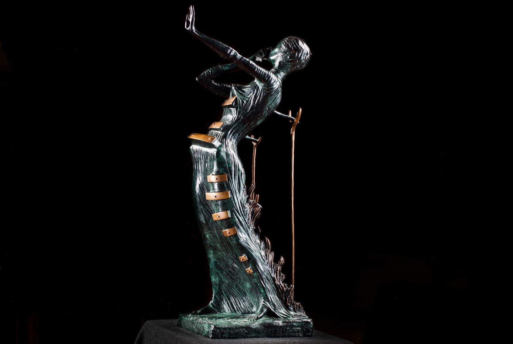
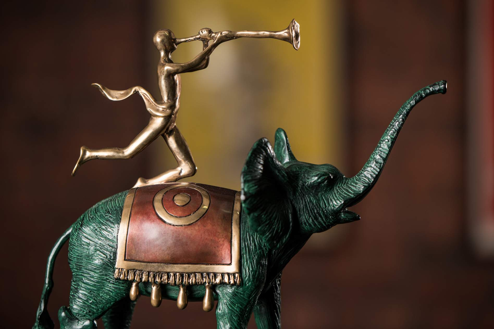

Сальвадор Дали & Пабло Пикассо


На выставке представлена одна из самых больших в мире частных коллекций скульптур Сальвадора Дали и керамики Пабло Пикассо, а также графика. Что думали два гения о женщинах, великих творцах, современниках и родной стране? Проект дарит возможность сравнить мировосприятие художников и взглянуть на окружающее их глазами
- Адрес: Путевой дворец Василия III
Ст. Басманная, 15, стр. 3
- Оценка: 4,8 / 5
- Часы работы: Ежедневно с 12:00 до 21:00